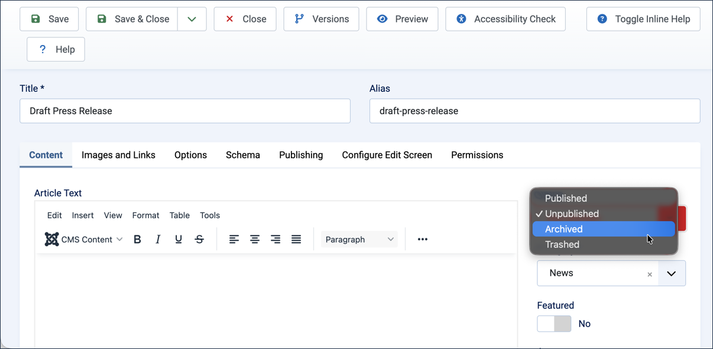
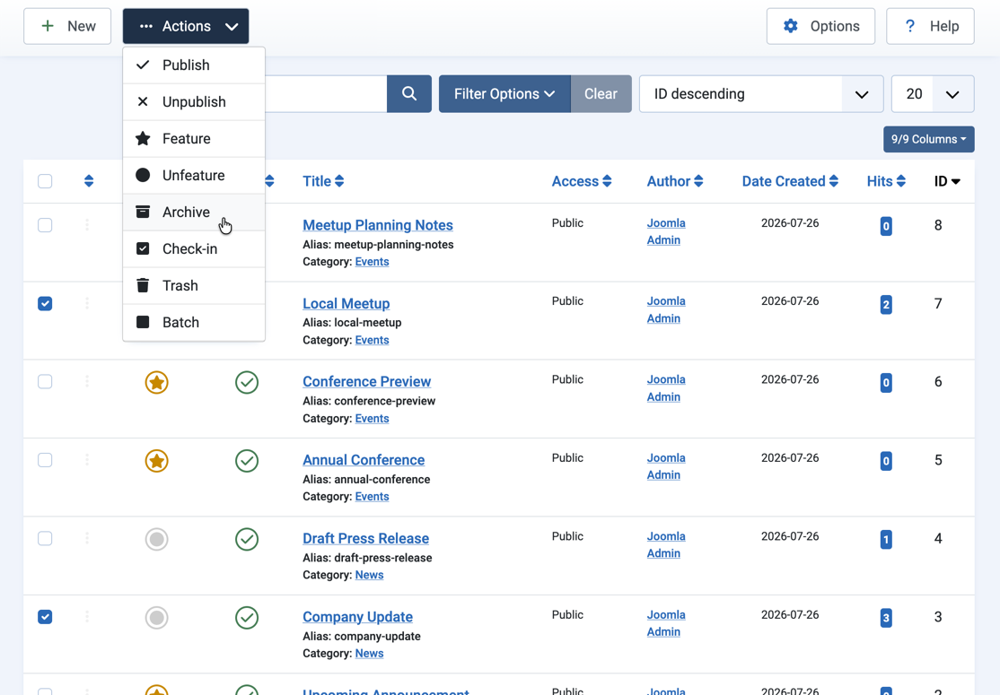
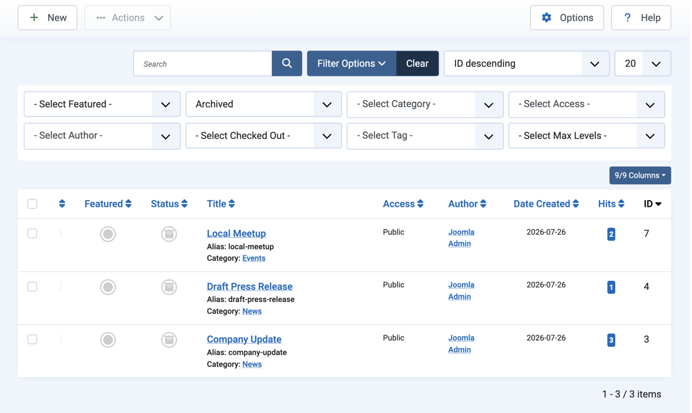
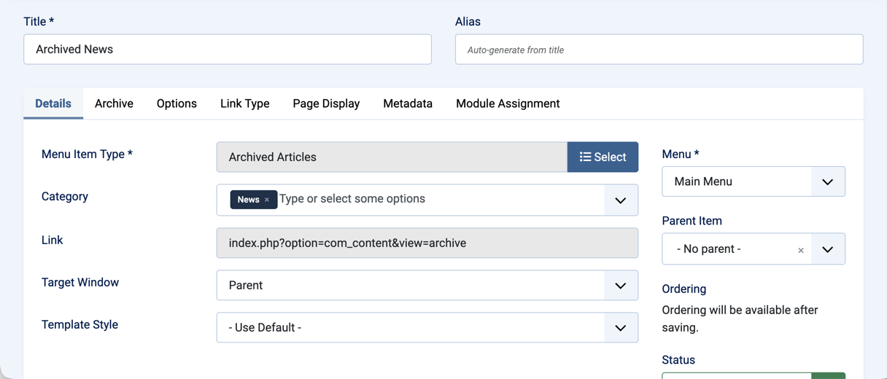
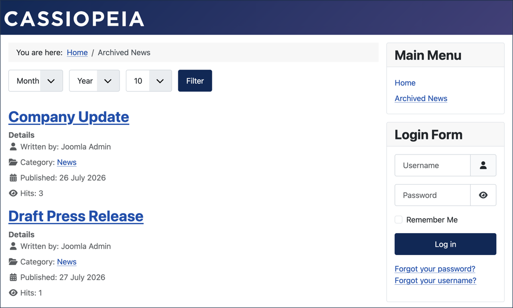
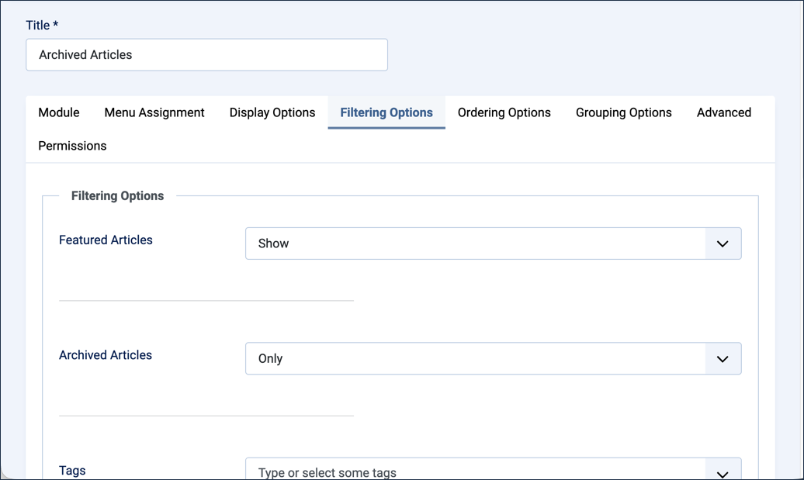
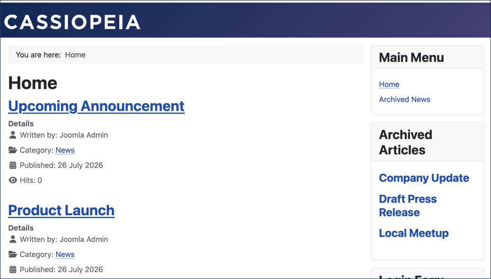
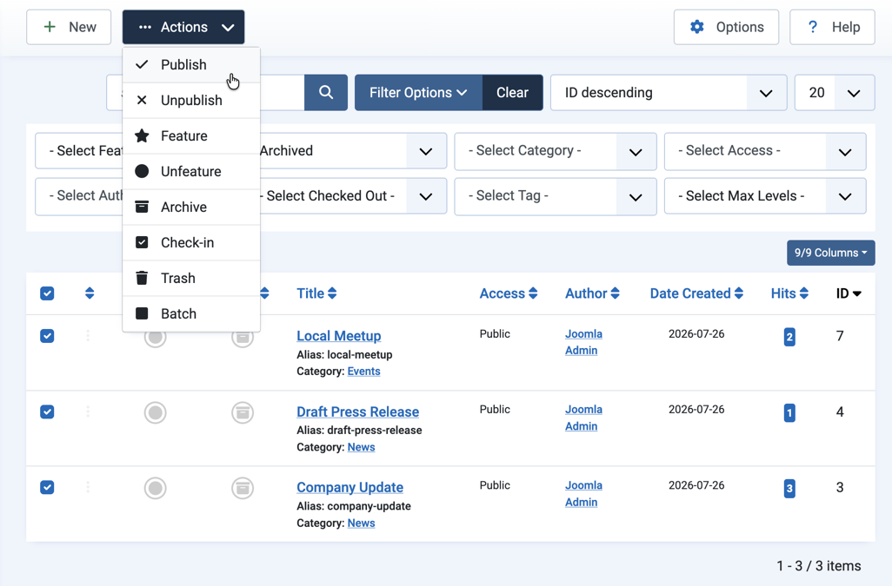

This article explains how to archive articles on your website, for example if the content is not very current or relevant, but you want to keep it available. In Joomla, you can simply change the status of your article to Archived.
5.1 Filter Articles creates the categories and articles used in this tutorial.
Steps
Everything we describe here takes place in Joomla's Administrator.
Log in to Joomla backend and navigate to the Home Dashboard.
In the Administrator Menu, click Content > Articles.
Archiving an Article in Edit Mode
Click Draft Press Release to open it for editing.
Set the Status field to Archived.

Setting the article's Status field to Archived
Click Save & Close. Result: Your article is archived and will no longer be visible in the default Articles list.
Archiving Multiple Articles from the Articles List
You can also archive articles directly from the list, without opening each one for editing.
Check the box next to Company Update and the box next to Local Meetup. Result: The Actions button in the toolbar is enabled.
Select Archive from the Actions options. Result: A confirmation message appears, and both articles disappear from the list.

Selecting Archive from the Actions dropdown for two checked articles
Finding Archived Articles
Archived articles no longer appear in the default Articles list.
Click Filter Options, then select Archived from the - Select Status - filter. Result: The list of archived articles appears — Draft Press Release, Company Update, and Local Meetup — each with an archive icon in front of its title.

Filtering the list on the Archived status
Displaying Archived Articles via a Menu
Once articles have been archived, you can display them on the site frontend with a dedicated menu item.
In the Administrator Menu, click Menus > Main Menu.
Click New. Result: A new-menu-item form appears.
Title:Archived News
Menu Item Type:Articles > Archived Articles
Select Category:News

The Archived News menu item, scoped to the News category
Save & Close
View the site frontend and click the Archived News menu item. Result: The page lists the archived News articles — Draft Press Release and Company Update. Local Meetup doesn't appear, since it's in the Events category.

The Archived News page on the frontend, showing the two archived News articles
Displaying Archived Articles via the Articles Module
You can also surface archived articles anywhere on your site using the Articles module.
In the Administrator Menu, click Content > Site Modules.
Click New, then select Articles as the module type. Result: A new-module form appears.
Title:Archived Articles
Position:sidebar-right
Click the Filtering Options tab.
Set the Archived Articles field to Only. Result: The module will only pull in archived articles.

Setting the Archived Articles field to Only on the Filtering Options tab
Save & Close
View the site frontend. Result: The Archived Articles module appears in the sidebar, listing Draft Press Release, Company Update, and Local Meetup.

The Archived Articles module on the frontend
Republish Archived Articles
Click Filter Options, then select Archived from the - Select Status - filter. Result: The list narrows to the three archived articles.
Tick the checkbox in the list column header to select all listed articles. Result: All three articles are selected, and the Actions button is enabled.
Pull down the Actions dropdown and select Publish. Result: All three articles are now published again.

Publishing all three archived articles at once from the Actions dropdown
Click Clear next to Filter Options to return to the full articles list.
Concepts
Archived is a status that hides older content without deleting it. Some types of menu items and modules can be configured to display archived content on the frontend.
In the backend, archived articles don't appear in the default Articles list; however, you can filter the list to view them.
Archiving does not unpublish an article. Unpublished is a specific status that blocks an article from public view.
Articles can be archived by changing their status, either in the article editor or by using the Actions menu in the article list.